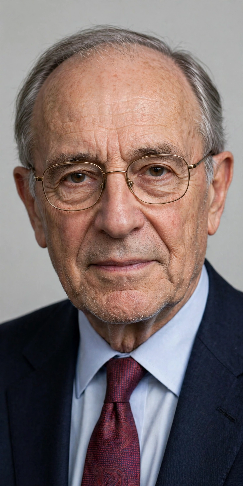

| Guy Standing | |
 | |
| Born | 9 February 1948 (age 76) |
|---|---|
| Nationality | British |
| Field | Labour economics, development studies |
| Institutions | SOAS University of London; International Labour Organization |
| Known for | The concept of the "precariat"; basic income advocacy |
| Notable works | The Precariat: The New Dangerous Class (2011) |
Guy Standing FAcSS (born 9 February 1948) is a British labour economist and professorial research associate at SOAS University of London. He is best known for his work on the precariat — a growing class of people living in insecure, unstable labour conditions — and as a leading advocate of unconditional basic income. He is a co-founder of the Basic Income Earth Network (BIEN).
Standing studied economics at the University of Sussex and received his PhD from the University of Cambridge. From 1975 to 2006 he worked at the International Labour Organization, latterly as director of its Socio-Economic Security Programme, where he developed labour flexibility and security indices. He has also advised governments and taught at the universities of Bath and Monash.
In The Precariat: The New Dangerous Class (2011), Standing argued that globalisation and neoliberal labour policies have created a new class-in-the-making beneath the traditional working class and salaried middle class: people without occupational identity, secure income, employment rights or predictable work — in gig jobs, temporary contracts, internships and zero-hours arrangements. He warned that the precariat's insecurity breeds anger, anomie and susceptibility to populist politics, and developed the argument in A Precariat Charter (2014) and The Corruption of Capitalism (2016), the latter criticising rentier capitalism.
Standing has designed and evaluated basic income pilots, including large experiments in Madhya Pradesh, India, and has written widely on the case for basic income as a matter of social justice and freedom. His later work, including Plunder of the Commons (2019) and The Blue Commons (2022), turns to the defence of shared common resources — land, and the oceans — against enclosure and privatisation.